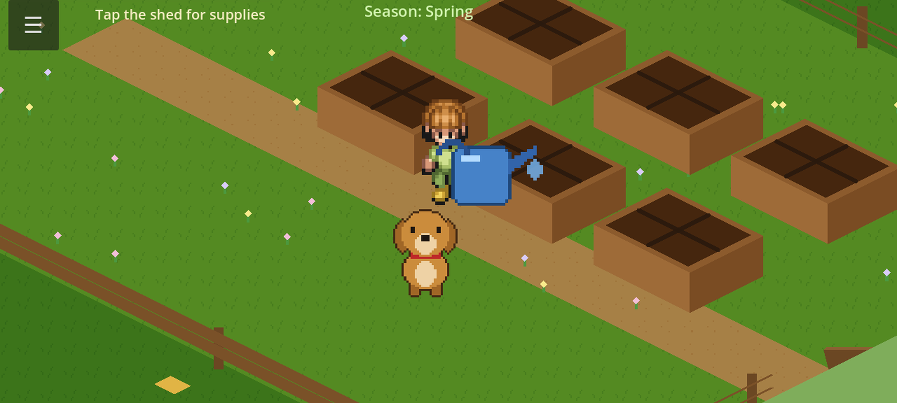

Homemade educational console
Star Learner
An inexpensive Android phone, rooted and locked down so it no longer behaves like a phone — it boots straight into a full-screen landscape home shell with a curated catalog of educational games and nothing else.
Hardware target is a Moto G Play in landscape kiosk mode: one-finger controls, baked narration, no browser, no store, no notifications. Every title uses the stars format — short documentary clips hidden as glowing knowledge stars inside an explorable world. Units play fully offline; the catalog grows over the home network after a device is already in a child’s hands.

Games
Five titles on the console home screen — same landscape shell, own worlds.
Catalog
- Ant Explorer — guide a worker through a living leaf-cutter nest and collect knowledge stars with short ant documentaries.
- Garden Explorer — plant, water, grow, and harvest in an offline seasonal garden while learning from stars along the way.
- Solar System Explorer — fly a spaceship or tour a narrated orrery, then watch clips from the Sun through the outer system.
- Math Explorer — addition through division with numbers made visible as countable cubes, narrated tutorials, and word problems.
- Language Explorer — bilingual EN/ES sentence matching, books, alphabet writing, and finger tracing.
Source and build notes live on GitHub. More from the same workshop: dylanmccapes.systems.